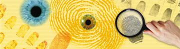
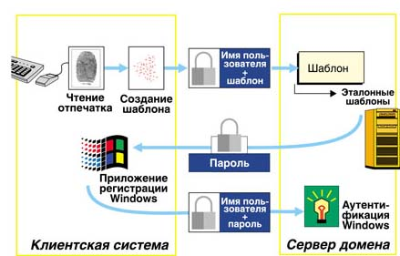
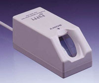
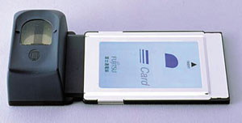

Андрей Борзенко
Чтобы установить личность задержанного,
полицейскому было достаточно
просто заглянуть ему в глаза.
Из газет

По мере развития компьютерных сетей и расширения сфер автоматизации ценность информации неуклонно возрастает. Государственные секреты, наукоемкие ноу-хау, коммерческие, юридические и врачебные тайны все чаще доверяются компьютеру, который, как правило, подключен к локальным и корпоративным сетям. Популярность глобальной сети Интернет, с одной стороны, открывает огромные возможности для электронной коммерции, но, с другой стороны, создает потребность в более надежных средствах безопасности для защиты корпоративных данных от доступа извне. В настоящее время все больше компаний сталкиваются с необходимостью предотвратить несанкционированный доступ к своим системам и защитить транзакции в электронном бизнесе.
Практически до конца 90-х годов основным способом персонификации пользователя было указание его сетевого имени и пароля. Справедливости ради нужно отметить, что подобного подхода по-прежнему придерживаются во многих учреждениях и организациях. Опасности, связанные с использованием пароля, хорошо известны: пароли забывают, хранят в неподходящем месте, наконец, их могут просто украсть. Некоторые пользователи записывают пароль на бумаге и держат эти записи рядом со своими рабочими станциями. Как сообщают группы информационных технологий многих компаний, большая часть звонков в службу поддержки связана с забытыми или утратившими силу паролями.
Известно, что систему можно обмануть, представившись чужим именем. Для этого необходимо лишь знать некую идентифицирующую информацию, которой, с точки зрения системы безопасности, обладает один-единственный человек. Злоумышленник, выдав себя за сотрудника компании, получает в свое распоряжение все ресурсы, доступные данному пользователю в соответствии с его полномочиями и должностными обязанностями. Результатом могут стать различные противоправные действия, начиная от кражи информации и заканчивая выводом из строя всего информационного комплекса.
Разработчики традиционных устройств идентификации уже столкнулись с тем, что стандартные методы во многом устарели. Проблема, в частности, состоит в том, что общепринятое разделение методов контроля физического доступа и контроля доступа к информации более несостоятельно. Ведь для получения доступа к серверу иногда совсем не обязательно входить в помещение, где он стоит. Причиной тому - ставшая всеобъемлющей концепция распределенных вычислений, объединяющая и технологию клиент-сервер, и Интернет. Для решения этой проблемы требуются радикально новые методы, основанные на новой идеологии. Проведенные исследования показывают, что ущерб в случаях несанкционированного доступа к данным компаний может составлять миллионы долларов.
Есть ли выход из этой ситуации? Оказывается, есть, и уже давно. Просто для доступа к системе нужно применять такие методы идентификации, которые не работают в отрыве от их носителя. Этому требованию отвечают биометрические характеристики человеческого организма. Современные биометрические технологии позволяют идентифицировать личность по физиологическим и психологическим признакам. Кстати, биометрия известна человечеству очень давно - еще древние египтяне использовали идентификацию по росту.
Основы биометрической идентификации
Главная цель биометрической идентификации заключается в создании такой системы регистрации, которая крайне редко отказывала бы в доступе легитимным пользователям и в то же время полностью исключала несанкционированный вход в компьютерные хранилища информации. По сравнению с паролями и карточками такая система обеспечивает гораздо более надежную защиту: ведь собственное тело нельзя ни забыть, ни потерять. Биометрическое распознавание объекта основано на сравнении физиологических или психологических особенностей этого объекта с его характеристиками, хранящимися в базе данных системы. Подобный процесс постоянно происходит в мозгу человека, позволяя узнавать, например, своих близких и отличать их от незнакомых людей.
Биометрические технологии можно разделить на две большие категории - физиологические и психологические (поведенческие). В первом случае анализируются такие признаки, как черты лица, структура глаза (сетчатки или радужной оболочки), параметры пальцев (папиллярные линии, рельеф, длина суставов и т.д.), ладонь (ее отпечаток или топография), форма руки, рисунок вен на запястье или тепловая картина. Психологические характеристики - это голос человека, особенности его подписи, динамические параметры письма и особенности ввода текста с клавиатуры.
На выбор метода, наиболее подходящего в той или иной ситуации, влияет целый ряд факторов. Предлагаемые технологии отличаются по эффективности, причем их стоимость в большинстве случаев прямо пропорциональна уровню надежности. Так, применение специализированной аппаратуры иной раз повышает стоимость каждого рабочего места на тысячи долларов.
Физиологические особенности, например, папиллярный узор пальца, геометрия ладони или рисунок (модель) радужной оболочки глаза - это постоянные физические характеристики человека. Данный тип измерений (проверки) практически неизменен, так же, как и сами физиологические характеристики. Поведенческие же характеристики, например, подпись, голос или клавиатурный почерк, находятся под влиянием как управляемых действий, так и менее управляемых психологических факторов. Поскольку поведенческие характеристики могут изменяться с течением времени, зарегистрированный биометрический образец должен при каждом использовании обновляться. Биометрия, основанная на поведенческих характеристиках, дешевле и представляет меньшую угрозу для пользователей; зато идентификация личности по физиологическим чертам более точна и дает большую безопасность. В любом случае оба метода обеспечивают значительно более высокий уровень идентификации, чем пароли или карты.
Важно отметить, что все биометрические средства аутентификации в той или иной форме используют статистические свойства некоторых качеств индивида. Это означает, что результаты их применения носят вероятностный характер и будут изменяться от раза к разу. Кроме того, все подобные средства не застрахованы от ошибок аутентификации. Существует два рода ошибок: ложный отказ (не признали своего) и ложный допуск (пропустили чужого). Надо сказать, что тема эта в теории вероятностей хорошо изучена еще со времен развития радиолокации. Влияние ошибок на процесс аутентификации оценивается с помощью сравнения средних вероятностей соответственно ложного отказа и ложного допуска. Как показывает практика, эти две вероятности связаны обратной зависимостью, т.е. при попытке ужесточить контроль повышается вероятность не пустить в систему своего, и наоборот. Таким образом, в каждом случае необходимо искать некий компромисс. Тем не менее, даже по самым пессимистичным оценкам экспертов, биометрия выигрывает при всех сравнениях, поскольку она значительно надежнее, чем другие существующие методы аутентификации.
Кроме эффективности и цены, компаниям следует учитывать также реакцию служащих на биометрические средства. Идеальная система должна быть простой в применении, быстрой, ненавязчивой, удобной и приемлемой с социальной точки зрения. Однако ничего идеального в природе нет, и каждая из разработанных технологий лишь частично соответствует всему набору требований. Но даже самые неудобные и непопулярные средства (например, идентификация по сетчатке, которой пользователи всячески стараются избежать, защищая свои глаза) приносят нанимателю несомненную пользу: они демонстрируют должное внимание компании к вопросам безопасности.
Развитие биометрических устройств идет по нескольким направлениям, но общие для них черты - это непревзойденный на сегодня уровень безопасности, отсутствие традиционных недостатков парольных и карточных систем защиты и высокая надежность. Успехи биометрических технологий связаны пока главным образом с организациями, где они внедряются в приказном порядке, например, для контроля доступа в охраняемые зоны или идентификации лиц, привлекших внимание правоохранительных органов. Корпоративные пользователи, похоже, еще не осознали потенциальных возможностей биометрии в полной мере. Часто менеджеры компаний не рискуют развертывать у себя биометрические системы, опасаясь, что из-за возможных неточностей в измерениях пользователи будут получать отказы в доступе, на который у них есть права. Тем не менее новые технологии все активнее проникают на корпоративный рынок. Уже сегодня существуют десятки тысяч компьютеризованных мест, хранилищ, исследовательских лабораторий, банков крови, банкоматов, военных сооружений, доступ к которым контролируется устройствами, сканирующими уникальные физиологические или поведенческие характеристики индивидуума.
Методы аутентификации
Как известно, аутентификация подразумевает проверку подлинности субъекта, которым в принципе может быть не только человек, но и программный процесс. Вообще говоря, аутентификация индивидов возможна за счет предъявления информации, хранящейся в различной форме. Это может быть:
- пароль, личный номер, криптографический ключ, сетевой адрес компьютера в сети;
- смарт-карта, электронный ключ;
- внешность, голос, рисунок радужной оболочки глаз, отпечатки пальцев и другие биометрические характеристики пользователя.
Аутентификация позволяет обоснованно и достоверно разграничить права доступа к информации, находящейся в общем пользовании. Однако, с другой стороны, возникает проблема обеспечения целостности и достоверности этой информации. Пользователь должен быть уверен, что получает доступ к информации из заслуживающего доверия источника и что данная информации не модифицировалась без соответствующих санкций.
Поиск совпадения "один к одному" (по одному атрибуту) называется верификацией. Этот способ отличается высокой скоростью и предъявляет минимальные требования к вычислительной мощности компьютера. А вот поиск "один ко многим" носит название идентификации. Реализовать подобный алгоритм обычно не только сложно, но и дорого. Сегодня на рынок выходят биометрические устройства, использующие для верификации и идентификации пользователей компьютеров такие индивидуальные характеристики человека, как отпечатки пальцев, черты лица, радужную оболочку и сетчатку глаза, форму ладони, особенности голоса, речи и подписи. На стадии тестирования и опытной эксплуатации находятся системы, позволяющие выполнять аутентификацию пользователей по тепловому полю лица, рисунку кровеносных сосудов руки, запаху тела, температуре кожи и даже по форме ушей.
Любая биометрическая система позволяет распознавать некий шаблон и устанавливать аутентичность конкретных физиологических или поведенческих характеристик пользователя. Логически биометрическую систему можно разделить на два модуля: модуль регистрации и модуль идентификации. Первый отвечает за то, чтобы обучить систему идентифицировать конкретного человека. На этапе регистрации биометрические датчики сканируют необходимые физиологические или поведенческие характеристики человека и создают их цифровое представление. Специальный модуль обрабатывает это представление с тем, чтобы выделить характерные особенности и сгенерировать более компактное и выразительное представление, называемое шаблоном. Для изображения лица такими характерными особенностями могут стать размер и относительное расположение глаз, носа и рта. Шаблон для каждого пользователя хранится в базе данных биометрической системы.
Модуль идентификации отвечает за распознавание человека. На этапе идентификации биометрический датчик снимает характеристики человека, которого нужно идентифицировать, и преобразует эти характеристики в тот же цифровой формат, в котором хранится шаблон. Полученный шаблон сравнивается с хранимым, чтобы определить, соответствуют ли эти шаблоны друг другу.
Например, в ОС Microsoft Windows для аутентификации пользователя требуется два объекта - имя пользователя и пароль. При использовании в процессе аутентификации отпечатков пальцев имя пользователя вводится для регистрации, а отпечаток пальца заменяет пароль (рис. 1). Эта технология использует имя пользователя в качестве указателя для получения учетной записи пользователя и проверки соответствия "один к одному" между шаблоном считанного при регистрации отпечатка и шаблоном, ранее сохраненным для данного имени пользователя. Во втором случае введенный при регистрации шаблон отпечатка пальца необходимо сопоставить со всем набором сохраненных шаблонов.
|  |
| Рис. 1. Процесс аутентификации по отпечаткам пальцев.
|
При выборе способа аутентификации имеет смысл учитывать несколько основных факторов:
- ценность информации;
- стоимость программно-аппаратного обеспечения аутентификации;
- производительность системы;
- отношение пользователей к применяемым методам аутентификации;
- специфику (предназначение) защищаемого информационного комплекса.
Очевидно, что стоимость, а следовательно, качество и надежность средств аутентификации должны быть напрямую связаны с важностью информации. Кроме того, повышение производительности комплекса, как правило, также сопровождается его удорожанием.
Отпечатки пальцев
В последние годы процесс идентификации личности по отпечатку пальца обратил на себя внимание как биометрическая технология, которая, вполне вероятно, будет наиболее широко использоваться в будущем. По оценкам Gartner Group (http://www.gartnergroup.com), данная технология доминирует на корпоративном рынке и в ближайшее время конкуренцию ей может составить лишь технология опознавания по радужной оболочке глаза.
Правительственные и гражданские организации во всем мире уже давно используют отпечатки пальцев в качестве основного метода установления личности. Кроме того, отпечатки - это наиболее точная, дружественная к пользователю и экономичная биометрическая характеристика для применения в компьютерной системе идентификации. Данной технологией в США пользуются, например, отделы транспортных средств администраций ряда штатов, MasterCard, ФБР, Секретная служба, Агентство национальной безопасности, министерства финансов и обороны и т.д. Устраняя потребность в паролях для пользователей, технология распознавания отпечатков пальцев сокращает число обращений в службу поддержки и снижает расходы на сетевое администрирование.
Обычно системы распознавания отпечатков пальцев разделяют на два типа: для идентификации - AFIS (Automatic Fingerprint Identification Systems) и для верификации. В первом случае используются отпечатки всех десяти пальцев. Подобные системы находят широкое применение в судебных органах. Устройства верификации обычно оперируют с информацией об отпечатках одного, реже нескольких пальцев. Сканирующие устройства бывают, как правило, трех типов: оптические, ультразвуковые и на основе микрочипа.
Преимущества доступа по отпечатку пальца - простота использования, удобство и надежность. Известны два основополагающих алгоритма распознавания отпечатков пальцев: по отдельным деталям (характерным точкам) и по рельефу всей поверхности пальца. Соответственно в первом случае устройство регистрирует только некоторые участки, уникальные для конкретного отпечатка, и определяет их взаимное расположение. Во втором случае обрабатывается изображение всего отпечатка. В современных системах все чаще используется комбинация этих двух способов. Это позволяет избежать недостатков обоих и повысить достоверность идентификации. Единовременная регистрация отпечатка пальца человека на оптическом сканере занимает немного времени. Крошечная CCD-камера, выполненная в виде отдельного устройства или встроенная в клавиатуру, делает снимок отпечатка пальца. Затем с помощью специальных алгоритмов полученное изображение преобразуется в уникальный "шаблон" - карту микроточек отпечатка, которые определяются имеющимися в нем разрывами и пересечениями линий. Этот шаблон (а не сам отпечаток) затем шифруется и записывается в базу данных для аутентификации сетевых пользователей. В одном шаблоне хранится от нескольких десятков до сотен микроточек. При этом пользователи могут не беспокоиться о неприкосновенности своей частной жизни, поскольку сам отпечаток пальца не сохраняется и не может быть воссоздан по микроточкам.
Преимущество ультразвукового сканирования - возможность определения требуемых характеристик на грязных пальцах и даже через тонкие резиновые перчатки. Стоит отметить, что современные системы распознавания нельзя обмануть даже свежеотрубленными пальцами (микрочип измеряет физические параметры кожи). Разработкой подобных систем занимаются более 50 различных производителей.
Использование отпечатка пальца для идентификации личности - самый удобный из всех биометрических методов. Вероятность ошибки при идентификации пользователя намного меньше в сравнении с другими методами биометрии. Качество распознавания отпечатка и возможность его правильной обработки алгоритмом сильно зависят от состояния поверхности пальца и его положения относительно сканирующего элемента. Различные системы предъявляют разные требования к этим двум параметрам. Характер требований зависит, в частности, от применяемого алгоритма. К примеру, распознавание по характерным точкам дает сильный уровень шума при плохом состоянии поверхности пальца. Распознавание по всей поверхности лишено этого недостатка, но для него требуется очень точно размещать палец на сканирующем элементе. Устройство идентификации по отпечатку пальца (сканер, рис. 2) не требует много места и может быть вмонтировано в указательный манипулятор (мышь) или клавиатуру.
|  | Рис. 2. Сканер для снятия отпечатков пальцев.
|
Геометрия лица
Идентификация человека по лицу в обычной жизни, без всяких сомнений, - самый распространенный способ распознавания. Что касается ее технической реализации, она представляет собой более сложную (с математической точки зрения) задачу, нежели распознавание отпечатков пальцев, и, кроме того, требует более дорогостоящей аппаратуры (нужна цифровая видео- или фотокамера и плата захвата видеоизображения). У этого метода есть один существенный плюс: для хранения данных об одном образце идентификационного шаблона требуется совсем немного памяти. А все потому, что, как выяснилось, человеческое лицо можно "разобрать" на относительно небольшое количество участков, неизменных у всех людей. Например, для вычисления уникального шаблона, соответствующего конкретному человеку, требуется всего от 12 до 40 характерных участков.
Обычно камера устанавливается на расстоянии в несколько десятков сантиметров от объекта. Получив изображение, система анализирует различные параметры лица (например, расстояние между глазами и носом). Большинство алгоритмов позволяет компенсировать наличие у исследуемого индивида очков, шляпы и бороды. Для этой цели обычно используется сканирование лица в инфракрасном диапазоне. Было бы наивно предполагать, что подобные системы дают очень точный результат. Несмотря на это, в ряде стран они довольно успешно используются для верификации кассиров и пользователей депозитных сейфов.
Геометрия руки
Наряду с системами для оценки геометрии лица существует оборудование для распознавания очертаний ладоней рук. При этом оценивается более 90 различных характеристик, включая размеры самой ладони (три измерения), длину и ширину пальцев, очертания суставов и т.п. В настоящее время идентификация пользователей по геометрии руки используется в законодательных органах, международных аэропортах, больницах, иммиграционных службах и т.д. Преимущества идентификации по геометрии ладони сравнимы с плюсами идентификации по отпечатку пальца в вопросе надежности, хотя устройство для считывания отпечатков ладоней занимает больше места.
Радужная оболочка глаза
Довольно надежное распознавание обеспечивают системы, анализирующие рисунок радужной оболочки человеческого глаза. Дело в том, что эта характеристика довольно стабильна, не меняется практически в течение всей жизни человека, невосприимчива к загрязнению и ранам. Заметим также, что радужки правого и левого глаза по рисунку существенно различаются.
Обычно различают активные и пассивные системы распознавания. В системах первого типа пользователь должен сам настроить камеру, передвигая ее для более точной наводки. Пассивные системы проще в использовании, поскольку камера в них настраивается автоматически. Высокая надежность этого оборудования позволяет применять его даже в исправительных учреждениях.
Преимущество сканеров для радужной оболочки состоит в том, что они не требуют, чтобы пользователь сосредоточился на цели, потому что образец пятен на радужной оболочке находится на поверхности глаза. Фактически видеоизображение глаза можно отсканировать даже на расстоянии менее метра, благодаря чему сканеры для радужной оболочки пригодны для банкоматов.
Сетчатка глаза
Метод идентификации по сетчатке глаза получил практическое применение сравнительно недавно - где-то в середине 50-х годов теперь уже прошедшего XX века. Именно тогда было доказано, что даже у близнецов рисунок кровеносных сосудов сетчатки не совпадает. Для того, чтобы зарегистрироваться в специальном устройстве, достаточно смотреть в глазок камеры менее минуты. За это время система успевает подсветить сетчатку и получить отраженный сигнал. Для сканирования сетчатки используется инфракрасное излучение низкой интенсивности, направленное через зрачок к кровеносным сосудам на задней стенке глаза. Из полученного сигнала выделяется несколько сотен первоначальных характерных точек, информация о которых усредняется и сохраняется в кодированном файле. К недостаткам подобных систем следует в первую очередь отнести психологический фактор: не всякий человек отважится посмотреть в неведомое темное отверстие, где что-то светит в глаз. К тому же надо следить за положением глаза относительно отверстия, поскольку подобные системы, как правило, чувствительны к неправильной ориентации сетчатки. Сканеры для сетчатки глаза получили большое распространение при организации доступа к сверхсекретным системам, поскольку гарантируют один из самых низких процентов отказа в доступе зарегистрированных пользователей и почти нулевой процент ошибок.
Голос и речь
Многие фирмы выпускают программное обеспечение, способное идентифицировать человека по голосу. Здесь оцениваются такие параметры, как высота тона, модуляция, интонация и т.п. В отличие от распознавания внешности, данный метод не требует дорогостоящей аппаратуры - достаточно лишь звуковой платы и микрофона.
Идентификация по голосу удобный, но не столь надежный способ, как другие биометрические методы. Например, у простуженного человека могут возникнуть трудности при использовании таких систем. Голос формируется из комбинации физиологических и поведенческих факторов, поэтому основная проблема, связанная с этим биометрическим подходом, - точность идентификации. В настоящее время идентификация по голосу используется для управления доступом в помещение средней степени безопасности.
Подпись
Как оказалось, подпись - такой же уникальный атрибут человека, как и его физиологические характеристики. Кроме того, это и более привычный для любого человека метод идентификации, поскольку он, в отличие от снятия отпечатков пальцев, не ассоциируется с криминальной сферой. Одна из перспективных технологий аутентификации основана на уникальности биометрических характеристик движения человеческой руки во время письма. Обычно выделяют два способа обработки данных о подписи: простое сравнение с образцом и динамическую верификацию. Первый весьма ненадежен, так как основан на обычном сравнении введенной подписи с хранящимися в базе данных графическими образцами. Из-за того, что подпись не может быть всегда одинаковой, этот метод дает большой процент ошибок. Способ динамической верификации требует намного более сложных вычислений и позволяет в реальном времени фиксировать параметры процесса подписи, такие как скорость движения руки на разных участках, сила давления и длительность различных этапов подписи. Это дает гарантии того, что подпись не сможет подделать даже опытный графолог, поскольку никто не в состоянии в точности скопировать поведение руки владельца подписи.
Пользователь, используя стандартный дигитайзер и ручку, имитирует свою обычную подпись, а система считывает параметры движения и сверяет их с теми, что были заранее введены в базу данных. При совпадении образа подписи с эталоном система прикрепляет к подписываемому документу информацию, включающую имя пользователя, адрес его электронной почты, должность, текущее время и дату, параметры подписи, содержащие несколько десятков характеристик динамики движения (направление, скорость, ускорение) и другие. Эти данные шифруются, затем для них вычисляется контрольная сумма, и далее все это шифруется еще раз, образуя так называемую биометрическую метку. Для настройки системы вновь зарегистрированный пользователь от пяти до десяти раз выполняет процедуру подписания документа, что позволяет получить усредненные показатели и доверительный интервал. Впервые данную технологию использовала компания PenOp.
Идентификацию по подписи нельзя использовать повсюду - в частности, этот метод не подходит для ограничения доступа в помещения или для доступа в компьютерные сети. Однако в некоторых областях, например в банковской сфере, а также всюду, где происходит оформление важных документов, проверка правильности подписи может стать наиболее эффективным, а главное -- необременительным и незаметным способом. До сих пор финансовое сообщество не спешило принимать автоматизированные методы идентификации подписи для кредитных карточек и проверки заявления, потому что подписи все еще слишком легко подделать. Это препятствует внедрению идентификации личности по подписи в высокотехнологичные системы безопасности.
Перспективы
Хотелось бы отметить, что наибольшую эффективность защиты обеспечивают системы, в которых биометрические системы сочетаются с другими аппаратными средствами аутентификации, например смарт-картами. Комбинируя различные способы биометрической и аппаратной аутентификации, можно получить весьма надежную систему защиты (что косвенно подтверждается большим интересом, который проявляют к этим технологиям ведущие производители).
Заметим, что смарт-карты образуют один из самых крупных и быстрорастущих сегментов рынка электронных продуктов для пользователей. По прогнозам фирмы Dataquest (http://www.dataquest.com), к следующему году объем продаж смарт-карт превысит полмиллиарда долларов. Применение смарт-карт требует наличия на каждом рабочем месте специального считывающего (терминального) устройства, подключенного к компьютеру, которое исключает необходимость вовлечения пользователя в процесс взаимодействия карты и сервера аутентификации. Собственно смарт-карта обеспечивает два уровня аутентификации. Для того чтобы система заработала, пользователь должен вставить смарт-карту в считывающее устройство, а затем правильно ввести личный идентификационный номер. На российском рынке комплексные решения, сочетающие идентификацию по отпечаткам пальцев и использование смарт-карт (рис. 3), предлагают, например, компании Compaq (http://www.compaq.ru) и Fujitsu-Siemens (http://www.fujitsu-siemens.ru).
|  | Рис. 3. Комбинированная система со сканером и смарт-картой.
|
Кроме крупных компьютерных компаний, таких как Fujitsu-Siemens, Motorola, Sony, Unisys, разработкой биометрических технологий в настоящее время занимаются преимущественно небольшие частные компании, которые объединились в консорциум по биометрии - Biometric Consortium (http://www.biometrics.org). Одно из наиболее обнадеживающих свидетельств того, что биометрия наконец вливается в основное русло ИТ-индустрии, - создание интерфейса прикладного программирования BioAPI (Biometrics API). За этой разработкой стоит консорциум производителей, сформированный в 1998 г. корпорациями Compaq, IBM, Identicator Technology, Microsoft, Miros и Novell специально для выработки стандартизованной спецификации, поддерживающей существующие биометрические технологии, которую можно было бы внедрить в операционные системы и прикладное ПО. В консорциум BioAPI сегодня входят 78 крупных государственных и частных компаний.
Теперь корпоративные клиенты могут использовать биометрические продукты в рамках стандартных компьютерных и сетевых технологий, избежав, таким образом, значительных материальных и временных затрат на интеграцию всех компонентов системы. Стандартные API дают доступ к широкому спектру биометрических устройств и программных продуктов, а также позволяют совместно применять продукты нескольких поставщиков.
В этом году правительство США уже объявило о внедрении в государственных учреждениях открытого стандарта BioAPI. Нововведения коснутся в первую очередь министерства обороны США, где для нескольких миллионов военных и гражданских сотрудников предполагается ввести новые смарт-карты, хранящие отпечатки пальцев и образец подписи владельца.
По мнению ряда аналитиков, биометрические технологии развиваются пока достаточно медленно, однако недалеко то время, когда не только настольные и портативные компьютеры, но и мобильные телефоны будут немыслимы без подобных средств аутентификации. Большие ожидания связаны с поддержкой перспективных биометрических технологий операционной системой Microsoft Windows.